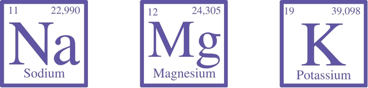

¿Qué son los electrolitos?
Imaginá tu cuerpo como una gran ciudad llena de actividad. Para que todo funcione correctamente, necesitás señales eléctricas que viajen por calles y avenidas. ¡Acá entran en juego los electrolitos! Son minerales como el sodio, el potasio, el magnesio y el calcio que se disuelven en agua y se convierten en mensajeros. Adquieren este nombre porque son minerales que cuando se disuelven en agua transportan una carga eléctrica: positiva (cationes: potasio, sodio, magnesio, calcio) o negativa (iones: cloro, bicarbonato, fósforo).
¿De dónde obtenemos electrolitos?
La mayoría de los electrolitos los obtenemos de nuestra alimentación. Algunos alimentos ricos en electrolitos son:
Sodio
Sal de mesa, embutidos, conservas, aderezos.
Potasio
Plátanos, palta, melón, uvas, verduras de hoja verde, boniato, champiñones, frutos secos, cereales, legumbres, huevo, pescado y carnes magras.
Magnesio
Semillas de sésamo y lino, frutos secos, legumbres (soja), cereales, palta, verduras de hoja verde.
Calcio
Productos lácteos, legumbres (garbanzos, porotos de soja), frutos secos (almendras), verduras de hoja verde, brócoli, semillas de sésamo, productos fortificados.
¿Por qué los electrolitos son importantes para la hidratación?
Durante la actividad física se genera calor aumentando nuestra temperatura corporal, por lo cual nuestro organismo utiliza la sudoración como herramienta para disipar y regular esa temperatura. El sudor está compuesto en mayor medida por agua salada (agua + cloruro de sodio - cloro + sodio-); y en menor concentración por otros minerales y sustancias como vitaminas, amoníaco, ácido láctico y urea. En resumen, a través de la sudoración, perdés agua y electrolitos. Si solo reponés agua, podés deshidratarte y desequilibrar los electrolitos en tu cuerpo, lo que puede provocar: Fatiga, calambres, debilidad y mareos. Por eso, es importante reponer tanto agua como electrolitos cuando hacés ejercicio o sudás mucho. Podés hacerlo con bebidas deportivas con alto contenido electrolítico, con agua de coco o simplemente comiendo alimentos ricos en electrolitos. Hacerlo con bebidas con alto contenido de electrolitos es la manera más rápida de recuperar estos minerales.